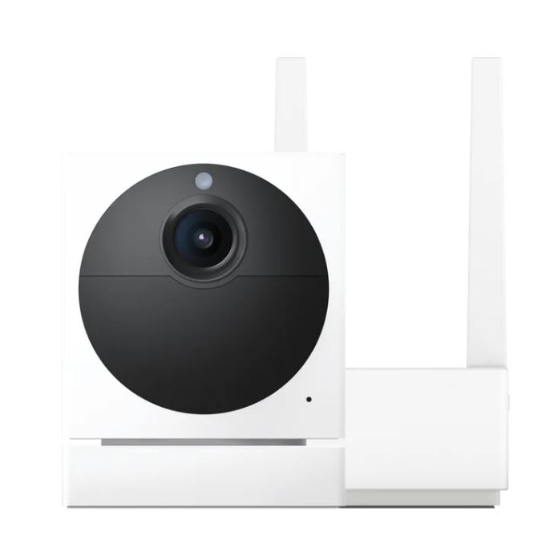

We Value our Clients Security over everything else, Your safety is important!
What Weston & Wyze Can Do For You
We offer a wide range of services all related to security, from quotes to
custom designed home security systems all provided by Weston the sole
propriator of Weston & Wyze
Every Wyze camera has many features that help it stay on the cutting edge of security, like the coloured
night vision in all Wyze cameras, or the two-way audio that can hold a conversation anywhere, with auto
detection tracking you will feel a lot safer but what takes the cake is it's local storage in all devices
that even without connection will still record and upload your footage as soon as it recieves a connection.
The Wyze Cam v3 does it all. It is the best bang for your buck, This camera has won awards on its
insides, price, and customer satisfaction. This camera has like all others, color night vision, super
low light sensors, indoor and outdoor use, local and cloud storage just like all other Wyze Cameras,
mini siren feature for scaring away intruders and most importantly crisp HD video and two way talk so
you can hear and talk back to people at your camera.
The Wyze Cam Og is the original Wyze camera but it has been upgraded since they were developed, with
built in spotlight 120 degree field of view and 1080p Colour Night Vision video to record all of life's
moments you’ll surely be happy with your purchase.
The Wyze cam telephoto is one of the more simple cameras Wyze offers and it comes with most features but
no video only photo recording making it good to monitor entrances and exits
The Wyze Cam Pan is an amazing camera that is really smart, it follows and tracks movement in it field
of view but not like cameras do it physically moves to track, then it uploads to the Wyze servers which
then go to your phone
The Wyze Cam Battery Pro only comes with one battery unless you order another but it has an extremely
long battery life and the batteries are rechargeable making this camera quite practical considering it
comes with no cables it also comes with spotlight and siren features to scare away unwanted guests and
has radar and PIR motion detection making it one of the most impressive cameras Wyze has if you
disregard the fact that the charger is sold separate.

The Outdoor Wyze camera is a Weston&Wyze favorite and we would recommend this device to all customers
While it has all the features the standard cameras do this camera is built to last, with a 6 month
battery that is rechargeable by micro usb, it comes with a base station to connect the camera to your
Wyze app but this camera can withstand winter colds and summer hots, but that's not even the best part
because if you like to travel this camera has a travel mode to protect your belongings anywhere you
want.
The Wyze Doorbell v2 is a nifty device, a lot like a Ring doorbell but it comes with a chime to install
anywhere to hear your doorbell from wherever, With two way audio for talking from another location or
privacy and safety and 2k video resolution so you can always answer your door.